eladmin
Eladmin generates CRUD/admin interface for Eloquent.
Table of Contents
- Installation
- Getting Started
- Advanced Configuration
- Actions
- Authorization
- Data Validation and Modification
- Filtering Results
- Contacts
Installation
You can install Eladmin using composer:
composer require onspli/eladmin
Getting Started
Let us have a simple website where users can register for events. We have two Eloquent models Event and Registration and we want to generate the admin interface for them. The steps we have to take are: 1. use Module\Eloquent\Crud trait in the models 2. extend Eladmin class with basic configuration properties $cache and $modules 3. call Eladmin::run() method to run Eladmin
Here is an example with a minimal configuration:
<?php
require __DIR__.'/../vendor/autoload.php';
use Illuminate\Database\Eloquent\Model;
use Illuminate\Database\Eloquent\SoftDeletes;
use Onspli\Eladmin\Eladmin;
use Onspli\Eladmin\Module\Eloquent\Crud;
/**
* Events schema:
* $table->increments('id');
* $table->string('name');
* $table->datetime('when');
* $table->string('where');
* $table->integer('price');
* $table->text('description');
* $table->timestamps();
* $table->softDeletes();
*/
class Event extends Model
{
use Crud;
use SoftDeletes;
}
/**
* Registrations schema:
* $table->increments('id');
* $table->string('name');
* $table->integer('event_id')->unsigned();
* $table->string('email');
* $table->string('status');
* $table->timestamps();
* $table->softDeletes();
*/
class Registration extends Model
{
use Crud;
use SoftDeletes;
}
/**
* Eladmin configuration
*/
class MyEladmin extends Eladmin
{
/**
* Cache directory used by template engine
*/
protected $cache = __DIR__.'/../cache';
/**
* Add modules to the administration.
*/
protected $modules = [Registration::class, Event::class];
}
/**
* Run Eladmin
*/
$myEladmin = new MyEladmin();
$myEladmin->run();
Eladmin comes with a simple authorization and user management out-of-the-box. Don't worry, the authorization can be easily overriden with your own solution. Default credentials are eladmin/nimdale.
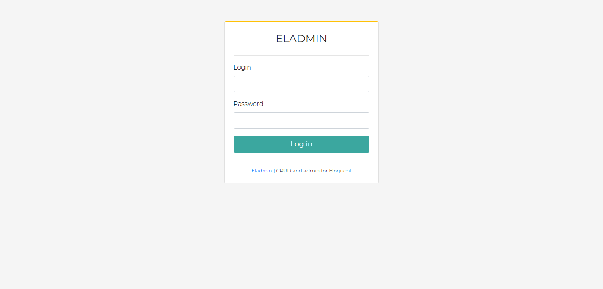
Don't forget to change your password after your first login by clicking the Account button in the upper right corner.
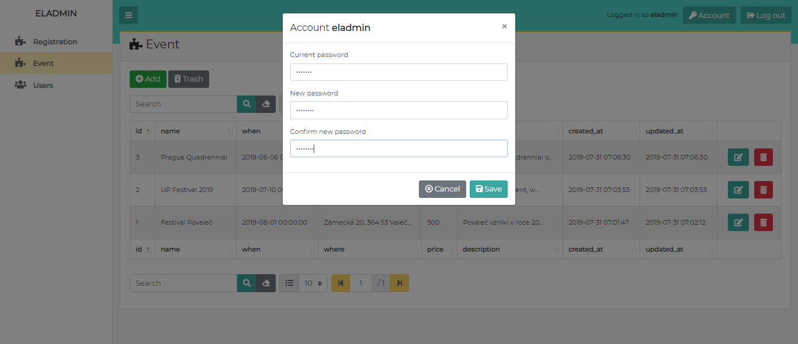
Here is the interface got with the minimal configuration example above.
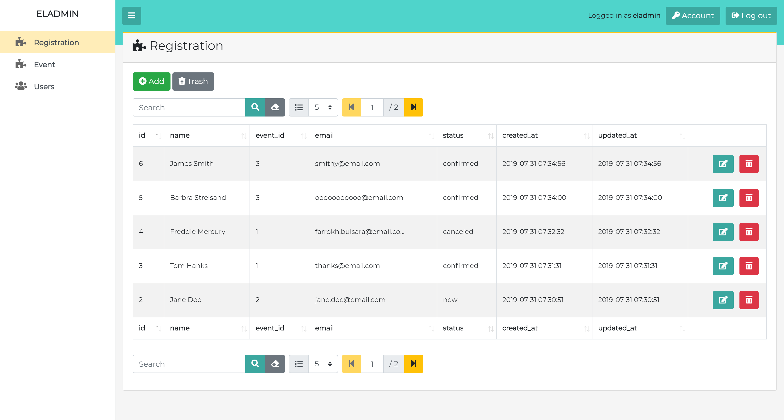
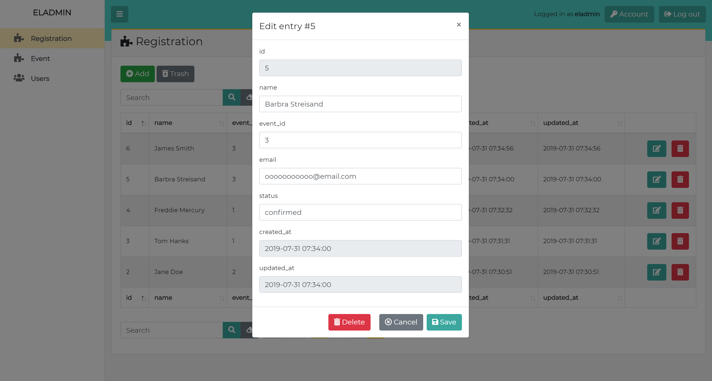
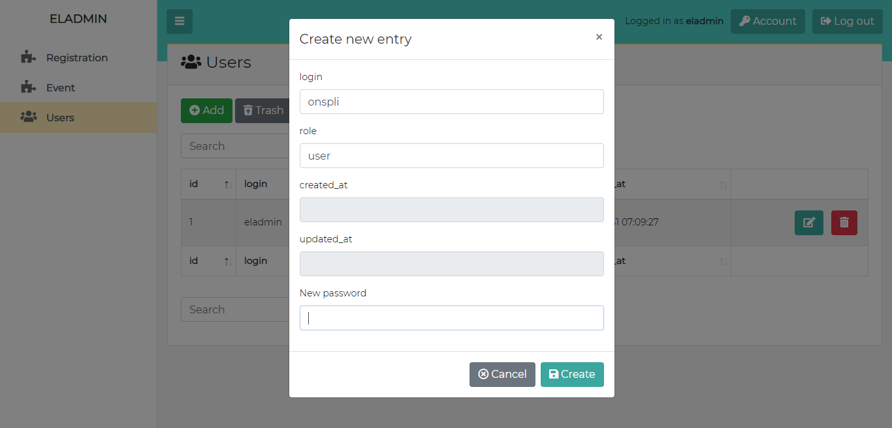
Advanced Configuration
An example and screenshots:
<?php
require __DIR__.'/../vendor/autoload.php';
use Illuminate\Database\Eloquent\Model;
use Illuminate\Database\Eloquent\SoftDeletes;
use Onspli\Eladmin\Eladmin;
use Onspli\Eladmin\User;
use Onspli\Eladmin\Module\Eloquent\Crud;
/**
* Events schema:
* $table->increments('id');
* $table->string('name');
* $table->datetime('when');
* $table->string('where');
* $table->integer('price');
* $table->text('description');
* $table->timestamps();
* $table->softDeletes();
*/
class Event extends Model
{
use Crud;
use SoftDeletes;
/**
* Set the title and icon used in the admin menu.
*/
protected $elaTitle = 'Events';
protected $elaIcon = '<i class="fas fa-calendar-alt"></i>';
/**
* Default order
*/
public $elaOrderBy = 'name';
public $elaOrderDirection = 'asc';
/**
* Column used to represent event in relations with other models.
*/
public $elaRepresentativeColumn = 'name';
/**
* Configure appearance and inputs for the table columns.
*/
public function elaColumns(){
$columns = $this->elaColumnsDef();
/**
* Set label and datetime format.
*/
$columns->when->label('When')->datetime('j.n.Y');
/**
* Set description to help people fill the input.
*/
$columns->name->label('Event')->desc('The name of the event.');
/**
* Don't show desc column in the table of events.
* Use textarea for editing the value.
*/
$columns->description->label('Description')->nonlistable()->textarea();
/**
* Move where column just before when column.
*/
$columns->where->label('Where')->before('when');
/**
* Move created column just after where column.
* Remove created_at from CREATE and EDIT form.
*/
$columns->created_at->label('Created')->after('where')->noneditable();
/**
* Move price column to the end.
* Change format of displayed value and output it unescaped.
*/
$columns->price->label('Price')->before()->format(function($val){ return '<em class="text-right d-block">'.$val.' Kč</em>'; })->raw();
/**
* Add new column computing the number of attenders.
* Disable the editation as the value won't save anyway.
*/
$columns->attenders->label('Attenders')->format(function($val, $row){ return Registration::where('event_id', $row->id)->count(); })->disabled();
/**
* Don't show or edit updated_at column.
*/
unset($columns->updated_at);
return $columns;
}
}
/**
* Registrations schema:
* $table->increments('id');
* $table->string('name');
* $table->integer('event_id')->unsigned();
* $table->string('email');
* $table->string('status');
* $table->timestamps();
* $table->softDeletes();
*/
class Registration extends Model
{
use Crud;
use SoftDeletes;
/**
* Set the title and icon used in the admin menu.
*/
protected $elaTitle = 'Attenders';
protected $elaIcon = '<i class="fas fa-user-check"></i>';
public function elaColumns(){
$columns = $this->elaColumnsDef();
$columns->name->label('Name');
$columns->email->label('E-mail');
$columns->created_at->label('Registered');
/**
* Select input with constant options. Format the output and show it unescaped.
*/
$columns->status
->label('Status')
->select(['new'=>'New', 'confirmed'=>'Confirmed', 'cancelled'=>'Cancelled'])
->format(function($val){
switch($val){
case 'new': return '<span class="badge badge-primary">'.$val.'</span>';
case 'confirmed': return '<span class="badge badge-success">'.$val.'</span>';
case 'cancelled': return '<span class="badge badge-danger">'.$val.'</span>';
}
return $val;
})
->raw();
/**
* Registration belongs to Event relation.
*/
$columns->event_id->label('Event')->belongsTo(Event::class)->select();
/**
* Don't show or edit updated_at column.
*/
unset($columns->updated_at);
return $columns;
}
}
/**
* Eladmin configuration
*/
class MyEladmin extends Eladmin
{
/**
* Cache directory used by template engine
*/
protected $cache = __DIR__.'/../cache';
/**
* Add modules to the administration.
*/
protected $modules = [Registration::class, Event::class];
/**
* Localize the interface. Supported languages are en_US, cs_CZ.
*/
protected $lang = 'en_US';
/**
* Set the title for the administration.
*/
protected $title = 'Cool Website';
/**
* Set the directory with views, so we can override default appearance and
* add new components. Eladmin uses Blade template engine.
*/
protected $views = __DIR__.'/../views';
/**
* Authorization class implementing Iface\Authorization interface
*/
protected $auth = User::class;
}
/**
* Run Eladmin
*/
$myEladmin = new MyEladmin();
$myEladmin->run();
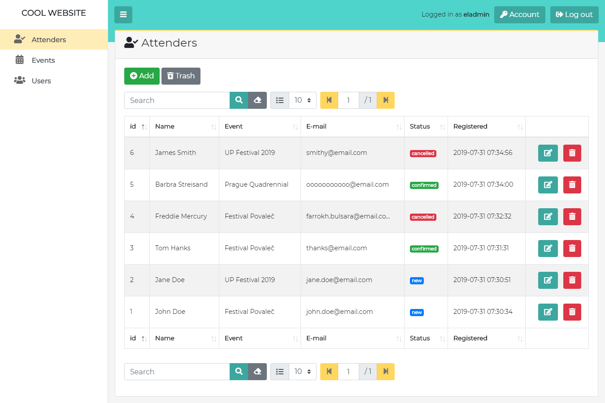
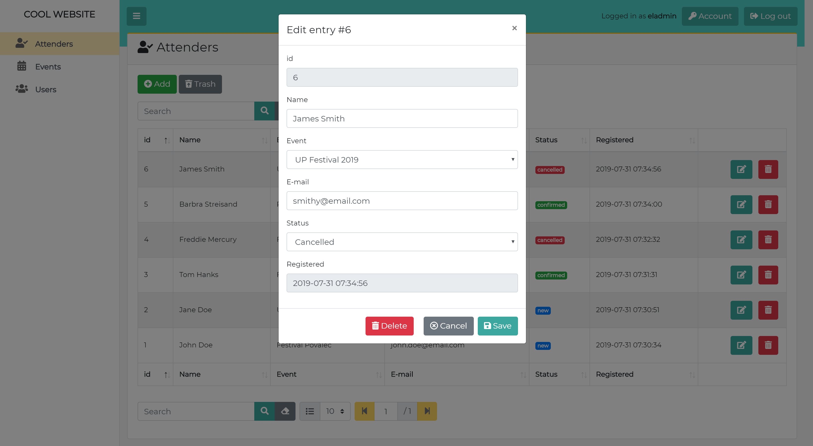
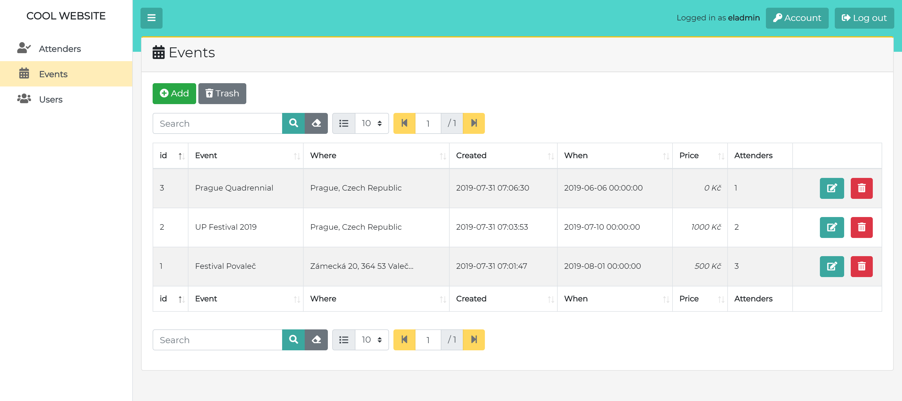
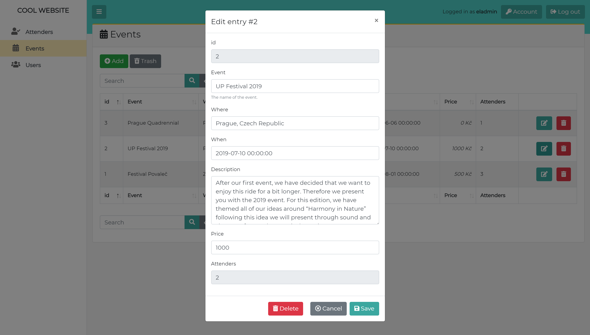
Actions
There are 4 default actions we can do with the records: create, read, update, delete. Sometimes it's not enough and we want to define our own actions. Eladmin can do that.
We want do add action cancel which cancels a registration. Add folowing code to the Registration model:
/**
* Define new action 'cancel' which cancels registration.
*/
public function elaActionCancel(){
if($this->status == 'cancelled')
throw new Exception\BadRequestException('Already cancelled!');
$this->status = 'cancelled';
$this->save();
echo 'Registration #'.$this->id.' was cancelled.';
}
/**
* Configure actions.
*/
public function elaActions(){
$actions = $this->elaActionsDef();
$actions->cancel // method elaActionCancel
->label(function($val, $row){return 'Cancel #'.$row->id;}) // label can be string or function
->icon('<i class="far fa-times-circle"></i>')
->style('warning') // boostrap button styles
->confirm('Do you really want to cancel?') // confirm the action
->done('console.log("Action \'cancel\' done.")') // run script after the action is done
->listable() // show the action in the table of registrations
->editable(); // show the action in the update form
return $actions;
}
Result:
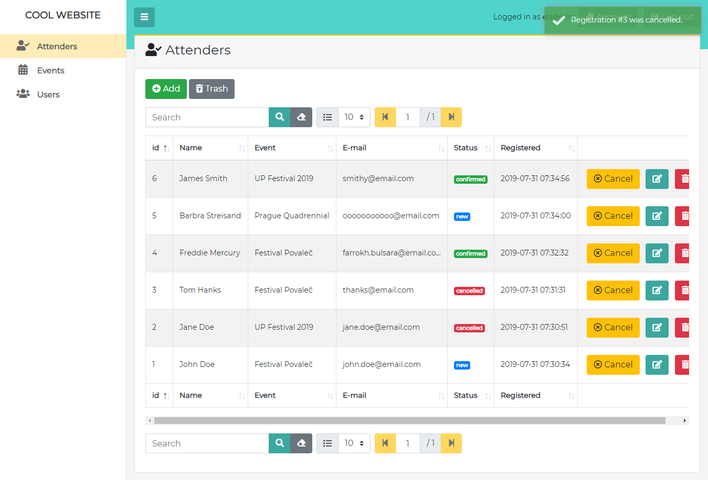
Authorization
Eladmin provides a way to authorize users to do actions. The following code in Event module does the authorization:
/**
* Roles authorized to work with the Event crud.
*/
protected $elaAuthorizedRoles = ['admin', 'user'];
/**
* Authorized roles for specific actions.
*/
protected $elaAuthorizedRolesActions = [
'update' => ['admin'], // only 'admin' role can update records
'delete' => ['admin'],
'read' => [], // all users can do that
'create' => ['admin', 'user'] // only users with roles 'admin' or 'user' are allowed
];
It results in the following (user onspli has role user).
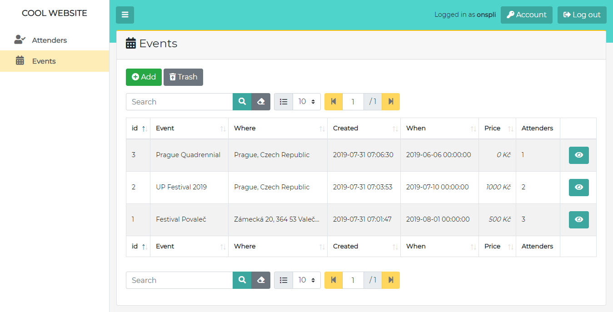
By default only 'admin' role is granted to work with eladmin Users crud.
Data Validation and Modification
Example code in Event model:
public function elaColumns(){
$columns = $this->elaColumnsDef();
$columns->name
// validate column name
->validate(function($val, $row){
if(!$val)
throw new Exception\BadRequestException('You have to fill the name!');
})
// modify column name
->set(function($val, $row){
if($val == 'change') return 'changed';
return $val;
});
return $columns;
}
Filtering Results
You can add your own filters to crud. Code in Registration model:
public function elaFilters(){
$filters = $this->elaFiltersDef();
$filters->name->label('Name')->icon('<i class="fas fa-user"></i>');
$filters->event_id->label('Event')->icon('<i class="fas fa-calendar-alt"></i>')->select(Event::class);
$filters->status->select([''=>'All', 'new'=>'New', 'confirmed'=>'Confirmed', 'cancelled'=>'Canceled']);
return $filters;
}
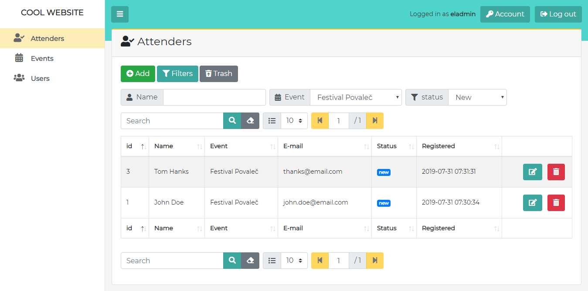
Contacts
Feel free to ask me any questions on ondrej.splichal@gmail.com.